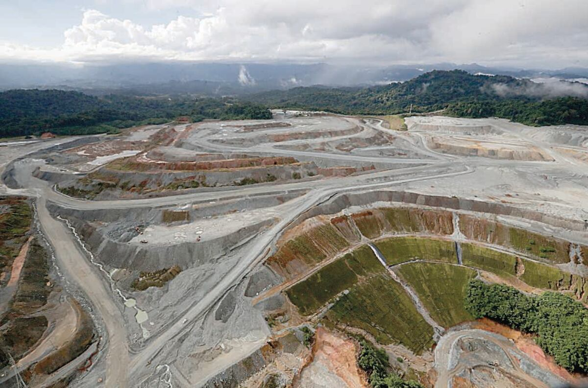
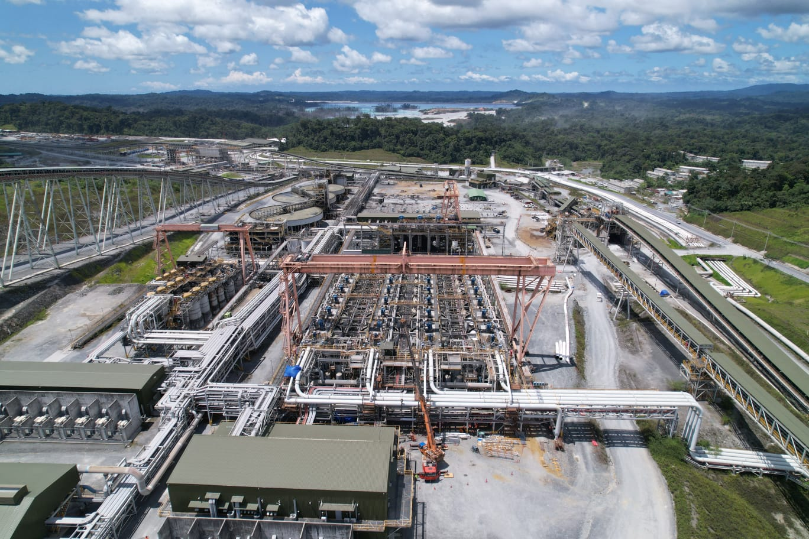
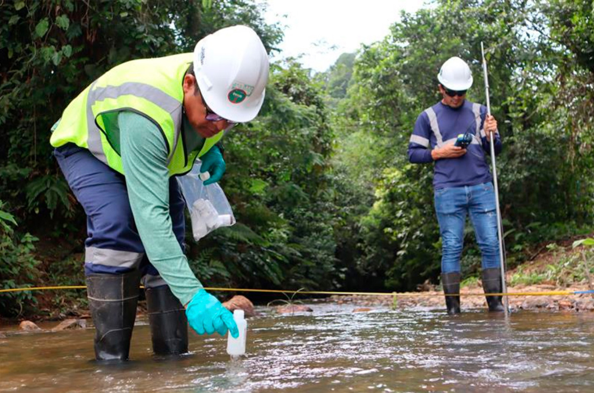
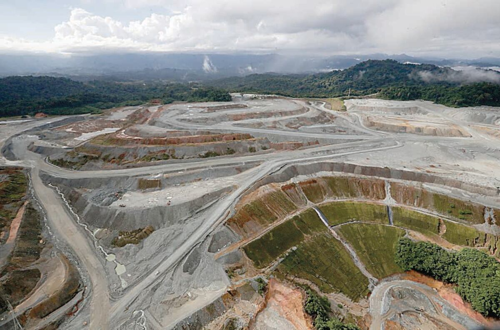
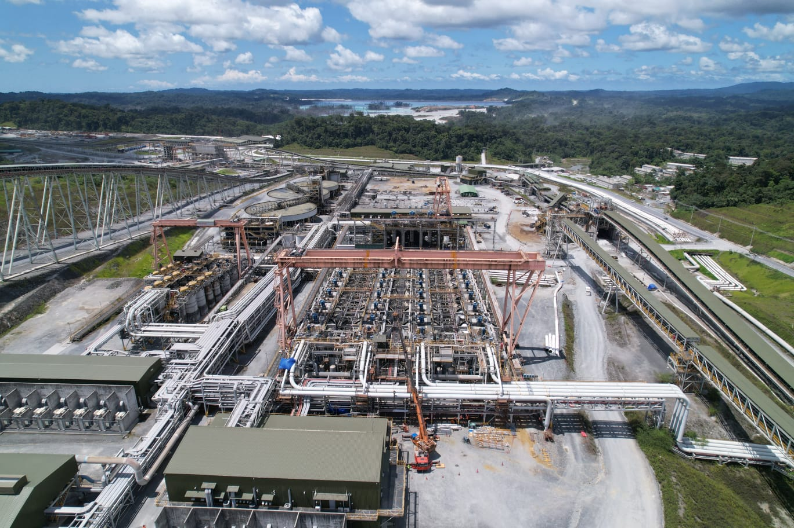
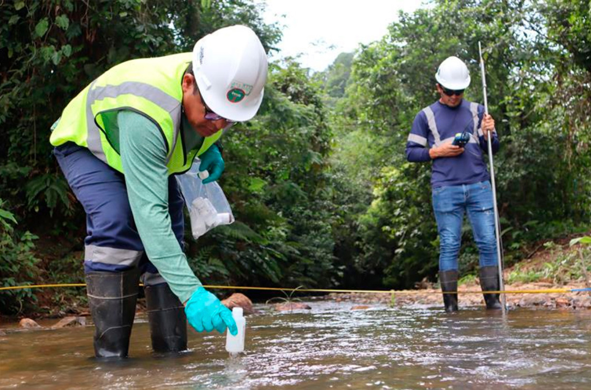

¿Qué es la Minería y sus Efectos?
La minería en Panamá es una actividad económica clave que contribuye al desarrollo y genera empleo, pero también plantea serios desafíos. Se trata de la extracción de minerales y recursos naturales del subsuelo, práctica que ha impulsado la economía nacional pero que al mismo tiempo ha despertado intensos debates.
Sus impactos negativos incluyen la deforestación, la contaminación del agua, la erosión del suelo y la pérdida de biodiversidad. Aunque existen leyes y regulaciones para mitigar estos efectos, su aplicación suele ser débil y muchas veces no se respeta adecuadamente.
La inclusión de las comunidades afectadas y el fortalecimiento de la vigilancia legal son esenciales para lograr un equilibrio entre el desarrollo económico y la conservación ambiental. La minería sostenible representa una oportunidad para avanzar hacia un futuro donde los recursos naturales se gestionen de manera responsable y equitativa.
 




